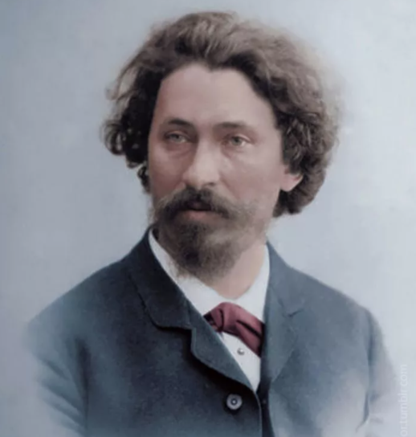

|  |
Репин И.Е. 1844-1930–
Репин Илья – принадлежит к числу выдающихся русских художников
второй половины 19-го века. Его творчество олицетворяет собой высшие
достижения живописи передвижников, стремившихся сделать искусство
понятным и близким народу, актуальным, отражающим основные закономерности жизни.
Репин не признавал "Искусства для искусства". " Я не могу заниматься непосредственным
творчеством, - писал он, - делать из своих картин ковры, ласкающие глаз...
приноравливаясь к новым веяниям времени. Всеми своими ничтожными силенками я
стремлюсь олицетворить мои идеи в правде; окружающая жизнь меня слишком волнует,
не дает покоя, сама просится на холст.
|